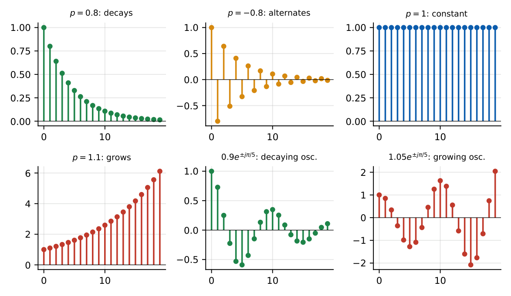
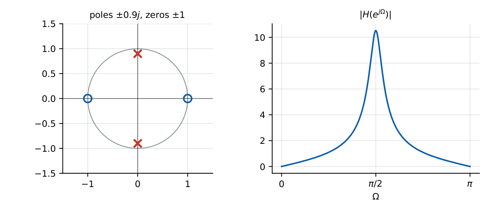
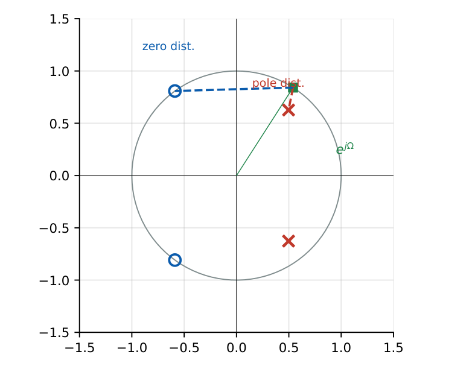

Poles, Zeros and System Properties
In this chapter
Given \(H(z)\) or a difference equation: locate poles/zeros, decide causality/stability from the ROC, sketch the magnitude response from the pole–zero plot, find DC gain, identify filter type. Standard 2-mark material.
25.1 Pole–zero representation
\[H(z)=\frac{Y(z)}{X(z)}=\frac{\sum b_mz^{-m}}{\sum a_kz^{-k}}=K\frac{\prod(1-z_mz^{-1})}{\prod(1-p_kz^{-1})}\] Zeros \(z_m\): values where \(H=0\); poles \(p_k\): values where \(H\to\infty\). The plot on the \(z\)-plane uses \(\times\) for poles and \(\circ\) for zeros with the unit circle drawn. Poles/zeros at the origin come from powers of \(z\) (\(H=z^{-1}\) has a pole at \(0\)).
25.2 ROC and system behaviour
The ROC is bounded by poles and contains no poles. The impulse response is \(h[n]=\sum_kA_kp_k^nu[n]\) for a causal system: each pole contributes a geometric mode \(p_k^n\).

25.3 Causality and ROC
A system is causal iff the ROC is the exterior of a circle including \(z=\infty\) (for a rational \(H\) this means degree of numerator \(\le\) degree of denominator, in powers of \(z\)).
25.4 Stability and ROC
A system is BIBO stable iff the ROC contains the unit circle. A causal system is therefore stable iff all poles lie strictly inside the unit circle. For an ROC that is not \(|z|>r_{max}\) the system is not causal, but it may still be stable.
\(H=\dfrac{1}{(1-0.5z^{-1})(1-2z^{-1})}\):
| ROC | Causal? | Stable? |
|---|---|---|
| \(|z|>2\) | yes | no (pole at 2 outside) |
| \(0.5<|z|<2\) | no (two-sided) | yes (unit circle in ROC) |
| \(|z|<0.5\) | no (left-sided) | no |
25.5 LTI-system characterisation
Stable and causal \(\Leftrightarrow\) all poles inside the unit circle and ROC exterior. Second-order stability (Jury): for \(1+a_1z^{-1}+a_2z^{-2}\), stable iff \(|a_2|<1\) and \(|a_1|<1+a_2\).
\(y[n]=1.2y[n-1]-0.5y[n-2]+x[n]\): denominator \(1-1.2z^{-1}+0.5z^{-2}\); \(a_1=-1.2\), \(a_2=0.5\): \(|a_2|<1\) and \(|a_1|=1.2<1.5\): stable. Poles \(0.6\pm j0.374\), magnitude \(\sqrt{0.5}=0.707\).
\(y[n]=y[n-1]-0.25y[n-2]+x[n]\): \((1-0.5z^{-1})^2\), double pole at \(0.5\): \(h[n]=(n+1)(0.5)^nu[n]\).
25.6 Transfer function
The transfer function is the \(z\)-transform of \(h[n]\). For a difference equation, take the \(z\)-transform with zero initial conditions. DC gain: \(H(1)=\sum h[n]\). Gain at \(\Omega=\pi\): \(H(-1)\).
\(H(z)=\dfrac{1+z^{-1}}{1-0.5z^{-1}}\): DC gain \(H(1)=\dfrac{2}{0.5}=4\); \(H(-1)=\dfrac{0}{1.5}=0\) (zero at \(z=-1\)): a low-pass.
25.7 Frequency response from the \(z\)-transform
\(H(e^{j\Omega})=H(z)|_{z=e^{j\Omega}}\). Geometric evaluation: the magnitude at \(\Omega\) is the product of distances from \(e^{j\Omega}\) to the zeros divided by the product of distances to the poles: a pole near the unit circle at angle \(\Omega_p\) produces a peak near \(\Omega_p\); a zero on the circle produces a null.
25.8 Unit circle
The unit circle is the “\(j\omega\) axis” of the \(z\)-plane: the left half-plane maps to the interior of the unit circle (\(z=e^{sT}\)). \(z=1\) is DC, \(z=-1\) is \(\Omega=\pi\), \(z=\pm j\) is \(\Omega=\pm\pi/2\).


25.9 Pole–zero plots for common filters
| Filter | Pole–zero pattern |
|---|---|
| Low-pass FIR (moving average) | zeros on the unit circle away from \(\Omega=0\) |
| High-pass differencer | zero at \(z=1\) |
| Notch | zeros on the circle at \(\Omega_0\), poles just inside at \(\Omega_0\) |
| Resonator (band-pass) | poles near the circle at \(\pm\Omega_0\), zeros at \(\pm1\) |
| All-pass \(\dfrac{z^{-1}-a}{1-az^{-1}}\) | pole at \(a\), zero at \(1/a\) (reciprocal) |
25.10 Difference equations
\(H(z)\Rightarrow\) difference equation: multiply out: \(H=\dfrac{1+z^{-1}}{1-0.5z^{-1}}\Leftrightarrow y[n]-0.5y[n-1]=x[n]+x[n-1]\). Impulse response by long division: \(h=\{1,\,1.5,\,0.75,\,0.375,\ldots\}\): \(h[0]=1\), \(h[1]=1+0.5=1.5\), \(h[n]=0.5h[n-1]\) for \(n\ge2\).
Q1. A causal LTI system is stable iff all poles are (A) outside the unit circle (B) inside the unit circle (C) on the unit circle (D) in the left half-plane.
Q2. \(H(z)=\dfrac1{1-0.5z^{-1}}\) has the pole at (A) \(z=0.5\) (B) \(z=-0.5\) (C) \(z=2\) (D) \(z=0\).
Q3. A pole at \(z=-0.9\) in a causal system gives an impulse-response mode that is (A) decaying, non-alternating (B) decaying, alternating (C) growing (D) constant.
Answers: Q1 (B). Q2 (A). Q3 (B).
Q4. \(H(z)=\dfrac{1+z^{-1}}{1-0.5z^{-1}}\). The DC gain is (A) \(1\) (B) \(2\) (C) \(4\) (D) \(0\).
Q5. \(H(z)=\dfrac1{(1-0.5z^{-1})(1-2z^{-1})}\) with ROC \(0.5<|z|<2\) is (A) causal, stable (B) non-causal, stable (C) causal, unstable (D) non-causal, unstable.
Answers: Q4 (C). Q5 (B).
Q6. For \(y[n]=0.8y[n-1]+x[n]\), the DC gain \(|H(e^{j0})|\) is .
Q7. \(h[2]\) for \(H=\dfrac{1+z^{-1}}{1-0.5z^{-1}}\) is (two decimals).
Answers: Q6: \(1/(1-0.8)=5\). Q7: \(0.75\).
Q8. A causal system with \(H=\dfrac1{1-az^{-1}}\) is: (A) stable for \(|a|<1\) (B) low-pass for \(0<a<1\) (C) high-pass for \(-1<a<0\) (D) unstable for \(|a|\ge1\) (marginal at \(|a|=1\)).
Answers: Q8: all four.
(i) Writing poles from \(z^{-1}\) polynomials: \(1-0.5z^{-1}=0\Rightarrow z=0.5\) (not \(2\)). (ii) Assuming ROC is \(|z|>r_{max}\) without being told the system is causal. (iii) Extra poles/zeros at \(z=0\). (iv) Calling \(|p|=1\) stable (it is marginal).
T1. Poles of \(y[n]=0.9y[n-1]-0.81y[n-2]+x[n]\)? T2. Is \(h[n]=(1.1)^nu[n]\) stable?
Answers: T1: \(z^2-0.9z+0.81=0\Rightarrow z=0.45\pm j0.78\), \(|z|=0.9\): stable. T2: pole at \(1.1\): unstable.
- Poles: roots of the denominator in \(z\) (\(1-az^{-1}\to z=a\)). Causal \(\Rightarrow\) ROC outside; stable \(\Rightarrow\) ROC contains \(|z|=1\).
- Causal stable \(\Leftrightarrow\) poles \(|p|<1\). Jury (2nd order): \(|a_2|<1\), \(|a_1|<1+a_2\).
- \(H(e^{j\Omega})=H(z)|_{z=e^{j\Omega}}\); DC \(H(1)\); Nyquist \(H(-1)\).
- Zero on circle \(\to\) null; pole near circle \(\to\) peak.